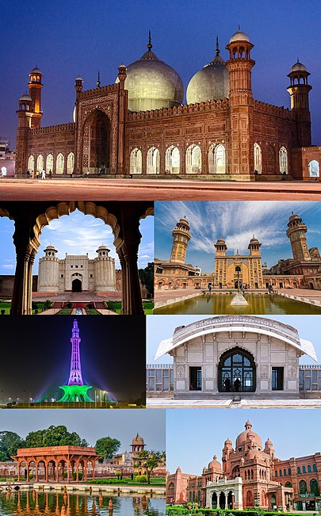

LAHORE
Lahore's origins reach into antiquity. The city has
been inhabited for at least two millennia, although
it rose to
prominence in the 10th century.[19] Lahore was the
capital of multiple empires throughout its history,
including the
Hindu Shahis, Ghaznavids, and Delhi Sultanate in the
medieval era. Lahore reached the height of its
splendor under
the Mughal Empire between the late 16th and early
18th century and served as its capital city for many
years.
The city was captured by the forces of the Afsharid
ruler Nader Shah in 1739. Although the Mughal
authority was
re-established, it fell into a period of decay while
being contested among the Afghans and the Sikhs
between
1748 and 1798. Lahore eventually became the capital
of the Sikh Empire in the early 19th century,
regaining
some of its lost grandeur.[20] Lahore was annexed to
the British Raj in 1849 and became the capital of
British
Punjab.[21] Lahore was central to the independence
movements of both India and Pakistan, with the city
being
the site of both the declaration of Indian
Independence and the resolution calling for the
establishment of
Pakistan. It experienced some of the worst riotings
during the Partition period preceding Pakistan's
independence.
[22] Following the success of the Pakistan Movement
and the subsequent partition of British India in
1947, Lahore was
declared the capital of Pakistan's Punjab province.
